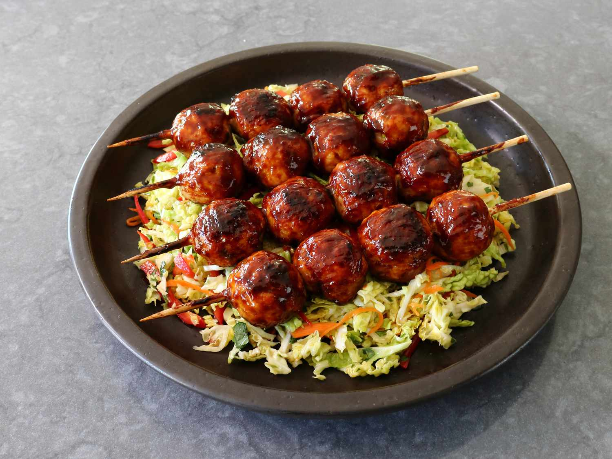

Chicken

Description
This technique for grilled chicken meatballs is the only way to go.
By pre-baking the meatballs, they finish quickly on the grill, and stay moist and juicy every time.
A hoisin-ginger glaze makes a beautiful, glossy meatball, but you can flavor them just about any way you want.
Ingredients
- 1 pound ground chicken
- 1 tablespoon sesame oil
- 1 tablespoon soy sauce
- 1 tablespoon mirin
- 1 teaspoon kosher salt
- 1 pinch freshly ground black pepper
- 1 pinch cayenne pepper
- 1/3 cup thinly sliced green onions
- 2 cloves garlic, crushed
- 2 tablespoons plain fine bread crumbs
Glaze
- 1 tablespoon ketchup
- 2 tablespoons hoisin sauce
- 2 teaspoons grated fresh ginger
- 2 tablespoons rice vinegar
- 4 skewers
Steps
- Add chicken, sesame oil, soy sauce, mirin, salt, pepper, cayenne, green onions, garlic, and bread crumbs to a bowl, and use a fork to gently but thoroughly mix everything together. Wrap and chill in the refrigerator for about 30 minutes before shaping.
- Preheat the oven to 400 degrees F (200 degrees C). Line a rimmed baking sheet with foil, and lightly grease the foil.
- Divide meatball mixture into 16 portions (about 2 rounded tablespoons each), and transfer onto the prepared pan. Using damp hands, roll each portion into a smooth meatball; and space out evenly on the baking sheet.
- Bake in the preheated oven for 15 minutes. Meatballs will be just cooked through, and an instant read thermometer inserted near the center will read 145 to 150 degrees F (63 to 66 degrees C).
- Let cool; wrap and keep in the refrigerator until needed. These can be made the day before.
- Preheat an outdoor grill, preferably charcoal, for medium heat, and lightly oil the grate. Stir ketchup, hoisin, fresh ginger, and rice vinegar together in a small bowl, and set aside.
- Place 4 meatballs on each skewer, and grill until lightly charred and heated through, about 3 minutes per side. Turn over, and brush with glaze. Turn back over, so the brushed side is down, and let sear for about 30 seconds; meanwhile, brush top with glaze.
- Turn over once more and let sear for about 30 seconds; remove from the heat. Apply more glaze after removing from the grill, as desired. Serve immediately.